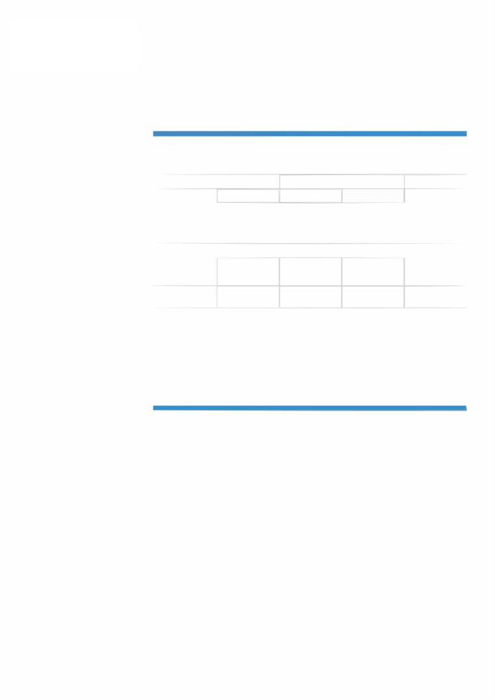

Curriculum vitae
INFORMAZIONI PERSONALI
Scardovi Marco
Via Marino Silvestroni, 2F, 48026 Russi (Italia)
(+39) 349 687 1880
mscardovi@petalmail.com
Sesso Maschile | Data di nascita 02/10/1995 | Nazionalità Italiana
TITOLO DI STUDIO
Diploma da perito meccatronico presso I.T.I.S. "G. Marconi"
ESPERIENZA PROFESSIONALE
10/09/2018-31/03/2020
Documentazione tecnica
PGM, Lugo (Italia)
- Redazione di documentazione tecnica, quali: Manuali Uso e Manutenzione, Schemi elettrici e
pneumatici, cataloghi ricambi
- Gestione siti
- Redazione di programmi interattivi in HTML5/CSS3/JavaScript
- Realizzazione e gestione di database in Excel/MySQL
- Utilizzo di programmi Office e Adobe
- Utilizzo di programmi per la visualizzazione 3D (ad esempio Creo Illustrate)
07/01/2018-06/08/2018
Operatore di macchine CNC/operatrice di macchine CNC
Zanellato, Conselice (Italia)
- Controllo di torni e frese CNC a 4 assi
- Tornitura a tornio manuale
- Fresatura a CNC e manuale
05/10/2017-23/12/2017
Montatore elettromeccanico/montatrice elettromeccanica
Pentatech, Lavezzola (Italia)
- Montaggio meccanico, pneumatico ed elettrico di macchine per l'imballaggio.
01/11/2016-30/09/2017
Operatore di fresatrice/operatrice di fresatrice
VR Plast, Lugo (Italia)
- Tecnico programmatore di pantografi a 4 e 5 assi per lavorazioni in plastica
01/10/2015-01/09/2016
Montatore elettromeccanico/montatrice elettromeccanica
Tellarini, Lugo (Italia)
- Montaggio di pompe elettrromeccaniche autoadescanti (sia meccanico che elettrico)
- Tornitura e fresatura di compnenti in C40, acciaio inox AISI 310 e 316 e ottone
- Saldatura di C40 e acciaio inox AISI 310 e 316
ISTRUZIONE E FORMAZIONE
07/09/2009-01/07/2014
Perito tecnico meccatronico
Livello 3 QEQ
Istituto Tecnico Industriale Statale "G. Marconi", Lugo (Italia)
9/3/20
Pagina 1 / 2

Curriculum vitae
Scardovi Marco
Generali
- Matematica, Italiano, Geografia, Inglese, Diritto ed economia, Educazione fisica
Tecniche
- Meccanica, Elettronica, Pneumatica, PLC, Disegno tecnico, Tecnologia dei materiali
COMPETENZE PERSONALI
Lingua madre
italiano
Lingue straniere
COMPRENSIONE
PARLATO
PRODUZIONE SCRITTA
Ascolto
Lettura
Interazione
Produzione orale
inglese
B2
C1
B1
B1
B2
Livelli: A1 e A2: Utente base - B1 e B2: Utente autonomo - C1 e C2: Utente avanzato
Competenze digitali
AUTOVALUTAZIONE
Elaborazione
Creazione di
Risoluzione di
delle
Comunicazione
Sicurezza
Contenuti
problemi
informazioni
Utente avanzato
Utente avanzato
Utente avanzato
Utente avanzato
Utente avanzato
- So usare in maniera fluente i programmi Office e Adobe. Ho acquisito queste competenze
autonomamente, ma anche durante il mio periodo di apprendistato presso la ditta PGM
Altre competenze
- Certificato di corso per la sicurezza ad alto rischio
Patente di guida
B
ULTERIORI INFORMAZIONI
Trattamento dei dati personali
Autorizzo il trattamento dei dati personali contenuti nel mio curriculum vitae in base all’art. 13 del
D. Lgs. 196/2003 e all’art. 13 del Regolamento UE 2016/679 relativo alla protezione delle persone
fisiche con riguardo al trattamento dei dati personali.
Pagina 2 / 2